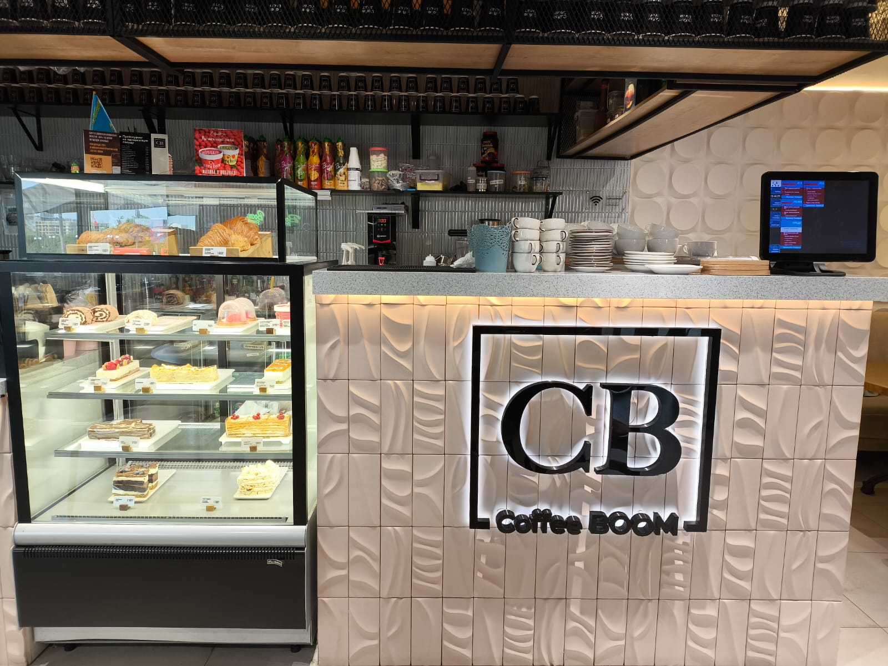

Artisanal Drinks & Fresh Pastries
Our kitchen and brewing counter at Samal 12 focus on uncompromising product freshness, balanced extraction formulas, and locally sourced ingredients. Whether stopping by for an energizing morning double shot or relaxing during an afternoon study break, our guests choose from a diverse catalog of espresso creations, botanical herbal blends, and freshly baked European sweets.

Every espresso foundation relies on selected medium-dark roast beans roasted weekly to preserve subtle aromas of roasted hazelnut and dark cocoa. Guests can customize each order with alternative dairy options, sugar-free syrups, and temperature adjustments suited to individual preferences.
Seasonal Price List
| Category | Item Description | Portion Size | Price (KZT) |
|---|---|---|---|
| Espresso Bar | Espresso Classic | 30 ml | 950 |
| Americano | 250 ml | 1,150 | |
| Cappuccino Standard | 300 ml | 1,450 | |
| Spanish Latte (Signature) | 350 ml | 1,850 | |
| Specialty Teas | Sea Buckthorn & Ginger Tea | 600 ml pot | 2,100 |
| Moroccan Mint Infusion | 600 ml pot | 2,000 | |
| Classic Earl Grey | 500 ml pot | 1,400 | |
| Bakery & Sweets | Butter Croissant | 110 g | 1,200 |
| San Sebastian Cheesecake | 180 g | 2,400 | |
| Honey Layer Cake (Medovik) | 160 g | 1,800 | |
| Standard Dairy Alternatives (Oat / Almond / Coconut) | +350 | ||
Beverage Customization Steps
- Choose your baseline drink temperature: hot or iced over filtered cubes.
- Select preferred dairy base:
- Farm Whole Milk (default)
- Barista Oat Milk
- Roasted Almond Milk
- Lactose-Free Milk
- Specify natural sweetener or house-made vanilla bean syrup.
Ready to place your request ahead of arrival? Proceed straight to our online pre-order page.